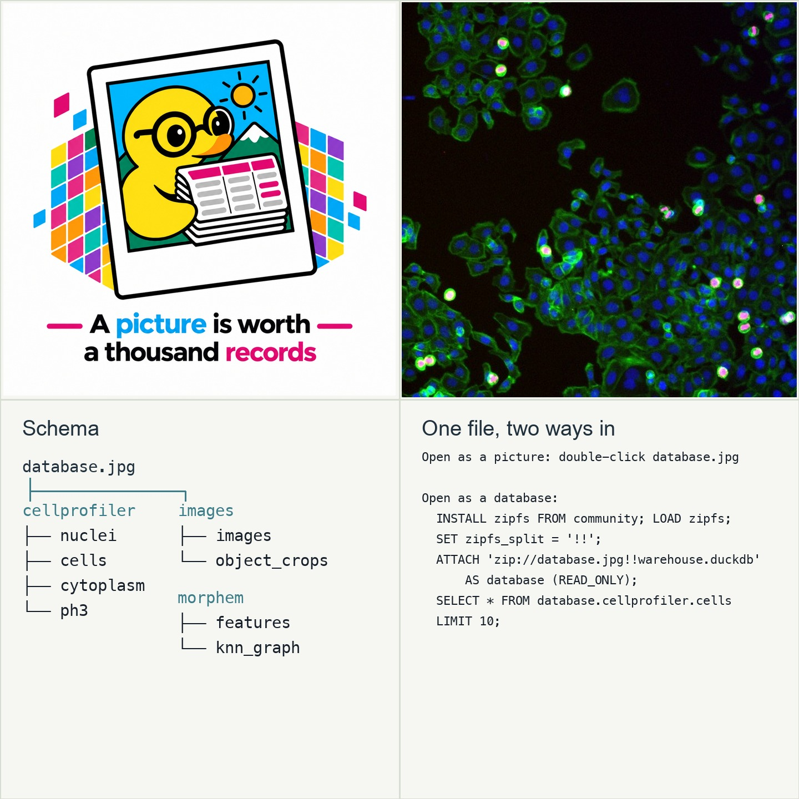

A picture is worth a thousand records
Source on GitHub
A lot of biology starts with a microscope image. In image-based profiling, researchers find every cell or nucleus in an image, measure its size, shape, brightness, and texture, and compare those measurements across many samples. Increasingly they also pass each cell through a deep-learning model and keep the result, an embedding: a list of numbers that summarizes how the cell looks.
Along the way the data scatters. The images live in one place, the segmentation masks in another, and the measurement tables and embeddings somewhere else, often in formats that only the original pipeline can read. The picture that started the analysis ends up far from the numbers that describe it.
This experiment asks whether one image file can carry both its data and the evidence needed to inspect a segmentation model's failures.
This project tries the opposite. database.jpg is an
ordinary JPEG: open it and you see the cover above, with the schema and
the instructions to query it. Appended to the same file is a complete
DuckDB database of 19,565
hand-annotated nuclei from the public
BBBC039 benchmark.
For every nucleus it holds an image crop, 271
CellProfiler-style
measurements, a learned embedding, and search
indexes. This page downloads that one file and queries it in your
browser. There is no database server, and nothing is uploaded.
Scroll down to try it: run SQL against the file, compare three 3D maps of the nuclei (PCA, UMAP, and t-SNE), and search for look-alikes. The sections after that explain how one file can be both a picture and a database, where the data comes from, and what the comparison can and cannot tell you.
Run your own SQL
This box runs SQL directly against the database inside
database.jpg, using
DuckDB-Wasm, DuckDB
compiled to WebAssembly.
Start from an example and edit it, or write your own. The maps and
the search below read the same tables, so anything you see on this
page you can also query here.
Compare the nuclei in feature space
Each point below is one hand-annotated nucleus, drawn three times. The three maps are three different ways to squeeze the same feature vectors into 3D: PCA, UMAP, and t-SNE. Nuclei that look alike should sit near each other, but "look alike" depends on how you describe a nucleus, and each map keeps different parts of the neighborhood structure. Switch between the three feature spaces to see how the representation reshapes all three maps at once.
The points also carry a verdict from Cellpose, the segmentation model: 90.4% of these hand-annotated nuclei were captured by a Cellpose mask (IoU ≥ 0.5) on the same fields. IoU means intersection over union: the shared area divided by the total area covered by either mask. Tick Highlight nuclei Cellpose missed in the map controls to color the ones it missed, and see whether they cluster in any of the maps.
How to read the Cellpose overlap
The violet points are the 1,878 manual nuclei (9.6%) no Cellpose mask captured at IoU ≥ 0.5. They are overlaid on feature spaces computed from manual masks and DNA crops; the feature vectors did not include the Cellpose result. If violet points bunch up, that is a clue that missed nuclei share shape, intensity, or embedding neighborhoods. If they are scattered, the miss may come from field context, touching cells, or segmentation behavior these nucleus-level features do not capture.
- cp_measure can expose simple measured traits: size, shape, brightness, texture, and radial intensity. It cannot see boundary ambiguity beyond the manual mask and intensity measurements.
- MorphEm can group nuclei by learned visual appearance in the DNA crop, including patterns not named by hand-engineered measurements. It cannot tell you which measurement caused a group, and it may group visual similarity unrelated to Cellpose failure.
- Fused asks where those two descriptions agree by combining reduced cp_measure and MorphEm vectors. It can make shared signals easier to find, but it cannot decide which side explains a miss without querying the source columns and crops.
PCA
Linear. Keeps the directions of greatest variance, so global layout is faithful but neighborhoods can overlap.
UMAP
Non-linear. Rebuilds each nucleus's local neighborhood in 3D and keeps more of the global shape than t-SNE.
t-SNE
Non-linear. Pulls near neighbors together tightly. Cluster sizes and gaps mean little.
Search for a nucleus by object number, or let the page pick one. The page shows its 12 most similar nuclei, ranked by distance in the current feature space. The same seed and neighbors are marked on all three maps, so you can compare how PCA, UMAP, and t-SNE treat one neighborhood: the index finds the neighbors in the full feature space, and each map shows how well it kept them together.
Could not fetch database.jpg automatically (this happens
when the page is opened from disk). Choose the file yourself. It stays
in your browser and is never uploaded:
What is inside database.jpg
database.duckdb
README.md
database.jpg is a
polyglot:
one sequence of bytes that is
valid in two file formats. The first part is a JPEG picture. The
second part is a ZIP archive that holds two files.
-
database.duckdb: the database. DuckDB (a program that keeps tables in one file) reads it. -
README.md: the instructions for the database.
How can one file be both?
A JPEG ends with a
two-byte marker,
FF D9. The marker
means that the picture ends here. A picture viewer stops at this
marker and ignores every byte after it.
A ZIP archive keeps its table of contents at the end of the file. A ZIP tool reads the end first. The table of contents tells the tool where each file starts, so the tool never needs the bytes at the front.
Because the two formats read from opposite ends, each tool sees only
its own part. A picture viewer sees a picture, and a ZIP tool sees an
archive. The archive stores the database without compression, so the
database inside it is a byte-for-byte copy of
database.duckdb, and DuckDB can read it straight out of
the JPEG.
One practical warning: keep the original file. Many apps and
websites re-encode pictures when you send or upload them, and a
re-encoded JPEG keeps the photo but loses everything after
FF D9.
Why this shape?
Scientific data formats usually treat images as payload: arrays to be stored and decoded, not something you look at first. We wanted the opposite order. The first thing anyone sees when they open this file is what the data is about: the source image, the schema, and how to query it. The analysis, down to individual nuclei, sits behind that picture in the same file.
Two recent projects shaped the design. F3 is a data file format that ships the data, its metadata, and WebAssembly decoders together, so a file carries the means to read it. JUMP-lite packages image-based profiling data in a compact, reproducible form for benchmarking cell representations. This project takes a simpler, deliberately low-tech path: a standard JPEG, a standard ZIP, and a standard DuckDB file, read by tools that already exist.
The trade-offs are real. A single file is easy to share and cite. But you must download all of it before the page can query it, and it grows with every table you add.
Why keep it under 100 MB?
GitHub blocks any file larger than 100 MiB (about 105 MB). This project keeps its code, its data, and this page in one GitHub repository. So the data file must fit under that limit. This file is 89 MB.
To fit, this file leaves out the original images and masks. It stores measurements in single precision. It keeps search indexes for only two of the three feature spaces.
Other options exist. Git LFS (large file storage) keeps big files outside the repository, and you can host a file somewhere else. Both add another system to set up. We chose one small file instead.
How this all works
Dataset at a glance
So the title undersells it a bit: this picture is worth more than a thousand records. Count the crops, feature vectors, and neighbor edges, and it carries hundreds of thousands of database rows.
The data comes from BBBC039, a public benchmark from the Broad Bioimage Benchmark Collection. It has 200 fluorescence images of human U2OS cells, stained so that DNA glows, and a hand-drawn mask outlining every nucleus. Using human annotations instead of an automatic segmentation means the nuclei themselves are not in question: any difference you see comes from how they are described.
That description is the core question of the field, and the page
compares three answers. The first is
cp_measure, a Python library that computes
CellProfiler's measurements: 271
values for size, shape, DNA
intensity, texture, granularity, and radial distribution. We ran it
on the manual masks, then reduced 263 of the values to 16 numbers
with
PCA. The full measurements are in
bbbc039.objects. The second is the pretrained
MorphEm model, a
vision transformer trained
on microscopy images, to embed each nucleus crop. Instead of measuring
named traits, the model reads the DNA crop and turns it into numbers
learned from image examples. It captures patterns nobody named in
advance, but its 384 numbers are hard to interpret one by one. The
third, the fused vector, joins both after
dimension reduction,
to test whether the two views complement each other.
Finding similar nuclei is a
nearest-neighbor search.
Similarity is plain
Euclidean distance
between vectors, computed in SQL with DuckDB's
array_distance. The maps are
built once per feature space, when the file is built, and are only for
looking. The search results, not the maps, are the ground truth: a
neighbor that looks far away on a map is still a true neighbor.
In the cp_measure and Fused spaces, the search does not compare the
chosen nucleus against every other one. The database holds an
HNSW index
(Malkov & Yashunin, 2016)
for each of them. DuckDB's vss
extension builds and reads these indexes. When you search, DuckDB asks
the index for the nearest nuclei, and the page shows them. At build
time we compared each index with an exact scan on about 200 nuclei.
The index returned at least 99% of the exact 12 nearest
neighbors. MorphEm has no stored index, because its 384-number
vectors make the index about 33 MB. MorphEm searches compare the
chosen nucleus against all 19,565 vectors instead, which
is still fast at this size. The message under the search box tells
you which method answered each search. Each map draws lines from the
selected nucleus to its 6 nearest neighbors.
Why use an index?
An index is a shortcut that makes search faster. Without one, the page compares your nucleus with every other nucleus. This is an exact scan (a full comparison). It is always right, but it gets slow when a collection has millions of cells.
HNSW (Hierarchical Navigable Small World) is one kind of index. It links each nucleus to a few close neighbors, in layers. The top layer has few nuclei and long links, and the bottom layer has every nucleus and short links. A search starts at the top. It moves down one layer at a time, always toward your nucleus, like going from country to city to street. It visits only a small part of the data.
The shortcut has two costs. The answer is approximate, so the index can miss a true neighbor (the check above found few misses). The index also takes space in the file. A MorphEm index adds about 33 MB, which takes the file past the 100 MB limit. So MorphEm has no index, and its searches use an exact scan.
With 19,565 nuclei, an exact scan is already fast. Here the index is a demonstration that pays off on larger collections. It also travels inside the same file as the data.
Three ways to draw the same vectors
A nucleus is a list of 16, 48, or 384 numbers, and nobody can look at 384 dimensions. Dimension reduction squeezes those vectors into three so you can rotate them. It always loses something. The three maps lose different things, so putting them side by side shows what each one can and cannot be trusted with.
- PCA (Jolliffe & Cadima, 2016) is linear. It rotates the data so the first axis captures the most variance, the second the next most, and so on, then keeps the first three. The layout is faithful to global distances, but three axes rarely hold enough of the variance, so different neighborhoods land on top of each other.
- UMAP (McInnes, Healy & Melville, 2018) is non-linear. It builds a graph of each nucleus's nearest neighbors and then lays the graph out in 3D. It keeps neighborhoods well and usually more of the overall shape than t-SNE, but distances between clusters are only roughly meaningful. The interactive essay Understanding UMAP shows how its settings change the picture.
- t-SNE (van der Maaten & Hinton, 2008), here computed with openTSNE (Policar, Strazar & Zupan, 2024), is also non-linear and puts the most weight on keeping near neighbors together. It is very good at that, and it often makes tight, well-separated blobs. But the size of a blob and the gaps between blobs carry little meaning, as the essay How to Use t-SNE Effectively shows with many small examples.
Each map's caption reports two numbers, measured over all nuclei against exact nearest neighbors in the feature space. The first is the share of a nucleus's 6 true neighbors that are also among its 15 nearest points on the map. The second is how many times closer a true neighbor sits than a random nucleus. When you run a search, each map also reports how much closer the 12 retrieved neighbors sit to the seed than chance. Expect PCA to score lowest on these and t-SNE highest, because t-SNE is built to optimize exactly this. That does not make t-SNE the best picture: it can exaggerate clusters that the vectors do not really separate.
What is neighbor density?
Neighbor density is the average distance from a nucleus to its 6 nearest neighbors in the feature space. A short distance means that many similar nuclei sit close by, so the neighborhood is dense. A long distance means the nucleus is unusual, so its neighborhood is sparse. The page ranks all nuclei by this number. It colors the ranks from blue (sparsest) to yellow (densest).
None of the three maps keeps density faithfully. A crowded patch on a map is not always a dense group of nuclei, and t-SNE in particular evens out density on purpose. So the color adds information that the position of a point does not show.
HNSW finds these neighbors. At build time, HNSW indexes with the same
settings as the stored ones find the 6 nearest neighbors of every
nucleus in each feature space. The build saves them in
features.knn_graph. For MorphEm the build uses a
temporary index that it does not keep. When the page loads, it
averages the 6 distances for each nucleus. When you search, the
stored cp_measure and Fused indexes find the neighbors of the nucleus
you pick.
What does fusion show?
The three feature-space buttons use the same nuclei, the same search code, and the same distance. Only the vector changes, so any difference in who counts as a neighbor comes from the representation alone. Here, fusion is simple concatenation: we put the 16 cp_measure numbers next to 32 PCA-reduced MorphEm numbers, making one 48-number vector for each nucleus.
That makes the page a way to build intuition about a live debate in the field. Engineered measurements like cp_measure's are transparent and long established: you can say a nucleus was grouped with others because it is large and bright. Learned embeddings like MorphEm's often separate subtle phenotypes better but are harder to explain. Fusing them asks whether you can have some of both.
What this is not
This is an interactive experiment, not a benchmark result. We did not score the feature spaces against a biological ground truth, and BBBC039 was designed for segmentation, not for comparing treatments. Some other limits to keep in mind:
- The database stores 8-bit JPEG crops for display. It does not store the original 16-bit images or the masks, which you can download from BBBC039.
- Measurements are stored as 32-bit floats, and each image's intensities were scaled to its own brightest pixel before measuring, so intensity values compare best within an image.
- The HNSW index is approximate, and DuckDB still marks storing it in a file as experimental.
- UMAP and t-SNE layouts depend on their settings (for t-SNE, mainly the perplexity) and on the random seed, and PCA keeps only three axes. Treat the shape of any one map as a sketch, not a measurement.
What the picture carries
We started with a simple question: what if the picture carried the data that came from it? In this experiment, a single JPEG under 100 MB holds 19,565 nuclei. It stores their image crops, 271 measurements each, learned embeddings, search indexes, and neighbor lists. It opens as a picture in any image viewer and as a database in DuckDB. It also powers the interactive page you are reading, with no server behind it.
The three maps show one thing clearly. A 3D map is a summary, and different summaries keep different things. We measured each map against exact neighbors in the feature space. In all three feature spaces, t-SNE kept the most of each nucleus's true neighborhood and PCA the least. Even so, no map replaces the answer it draws. The search runs in the full feature space, so you can check any map against the result it tries to show.
This page is an experiment. It shows what is possible when one picture file carries its own data. It is not a recommendation or a standard.
Everything on this page is open. Download database.jpg, open it with the DuckDB recipe printed on the cover, and ask your own questions. The code that built it is on GitHub, and every figure you see here comes from tables you can query with the SQL box above.
References
Here is where the data, the models, and the methods on this page came from.
Software
These packages do the technical work in this build.
- BBBC039: source images and manual masks.
- scikit-image: decoding the masks into labeled nuclei.
- cp_measure: the CellProfiler measurements.
- CaicedoLab/MorphEm: nucleus embeddings.
- scikit-learn: the PCA coordinates and the exact neighbor checks.
- umap-learn: UMAP coordinates.
- openTSNE: t-SNE coordinates.
- DuckDB vss: the HNSW indexes and the nearest-neighbor search.
- DuckDB and DuckDB-Wasm: SQL in the database and browser.
Papers and data
- Zeng, X., Meng, R., Prammer, M., McKinney, W., Patel, J.M., Pavlo, A., et al. (2025). F3: The Open-Source Data File Format for the Future. Proceedings of the ACM on Management of Data, 3(4), 1 to 27. Inspiration for a file that carries both data and the means to read it.
- Caicedo, J.C., Cooper, S., Heigwer, F., et al. (2017). Data-analysis strategies for image-based cell profiling. Nature Methods, 14, 849–863. An overview of the field this page works in.
- Ljosa, V., Sokolnicki, K.L., & Carpenter, A.E. (2012). Annotated high-throughput microscopy image sets for validation. Nature Methods, 9, 637. Source publication for the Broad Bioimage Benchmark Collection.
- Caicedo, J.C., Goodman, A., Karhohs, K.W., et al. (2019). Nucleus segmentation across imaging experiments: the 2018 Data Science Bowl. Cytometry Part A, 95(9), 952 to 965. Recommended source for BBBC039v1.
- BBBC039. Nuclei of U2OS cells in a chemical screen. Source of the 200 DNA images and manual masks.
- van der Walt, S., Schonberger, J.L., Nunez-Iglesias, J., et al. (2014). scikit-image: image processing in Python. PeerJ, 2, e453. Used to decode the masks into labeled nuclei.
- Munoz, A.F., Treis, T., Kalinin, A.A., Dasgupta, S., Theis, F., Carpenter, A.E., & Singh, S. (2025). cp_measure: API-first feature extraction for image-based profiling workflows. arXiv:2507.01163. The library (version 0.2.0) that computed the 271 CellProfiler measurements for each nucleus.
- Carpenter, A.E., Jones, T.R., Lamprecht, M.R., et al. (2006). CellProfiler: image analysis software for identifying and quantifying cell phenotypes. Genome Biology, 7, R100. Original source for the CellProfiler measurement style that cp_measure implements.
- Stringer, C., Wang, T., Michaelos, M., & Pachitariu, M. (2021). Cellpose: a generalist algorithm for cellular segmentation. Nature Methods, 18, 100–106. Background for the segmentation model family used in the comparison.
-
Pachitariu, M., Rariden, M., & Stringer, C. (2025).
Cellpose-SAM: superhuman
generalization for cellular segmentation. bioRxiv. Reference
for the Cellpose-SAM model family behind
cpsam_v2. - Jaccard index. Reference for intersection over union (IoU), the overlap metric used to mark Cellpose captures and misses.
- Chen, Z., Pham, C., Wang, S., Doron, M., Moshkov, N., Plummer, B.A., & Caicedo, J.C. (2023). CHAMMI: A benchmark for channel-adaptive models in microscopy imaging. NeurIPS Datasets and Benchmarks Track. The dataset MorphEm trained on.
- CaicedoLab/MorphEm. The pretrained model used to compute each nucleus embedding.
- Munoz, A.F., Haslum, J.F., Shen, R., Carpenter, A.E., & Singh, S. (2026). JUMP-lite: Compact, reproducible benchmarking of cell representations. arXiv:2608.07632. Benchmarks cp_measure and MorphEm using lossy JPEG XL compression.
- Dosovitskiy, A., Beyer, L., Kolesnikov, A., et al. (2021). An Image is Worth 16x16 Words: Transformers for Image Recognition at Scale. ICLR 2021. The vision transformer architecture MorphEm builds on.
- Jolliffe, I.T., & Cadima, J. (2016). Principal component analysis: a review and recent developments. Philosophical Transactions of the Royal Society A, 374(2065), 20150202.
- van der Maaten, L., & Hinton, G. (2008). Visualizing data using t-SNE. Journal of Machine Learning Research, 9, 2579–2605.
- van der Maaten, L. (2014). Accelerating t-SNE using tree-based algorithms. Journal of Machine Learning Research, 15, 3221–3245. The Barnes-Hut method used for the 3D t-SNE maps.
- Policar, P.G., Strazar, M., & Zupan, B. (2024). openTSNE: a modular Python library for t-SNE dimensionality reduction and embedding. Journal of Statistical Software, 109(3).
- McInnes, L., Healy, J., & Melville, J. (2018). UMAP: Uniform Manifold Approximation and Projection for Dimension Reduction. arXiv:1802.03426.
- Malkov, Y.A., & Yashunin, D.A. (2016). Efficient and robust approximate nearest neighbor search using Hierarchical Navigable Small World graphs. arXiv:1603.09320.
- Raasveldt, M., & Muhleisen, H. (2019). DuckDB: an Embeddable Analytical Database. SIGMOD 2019.